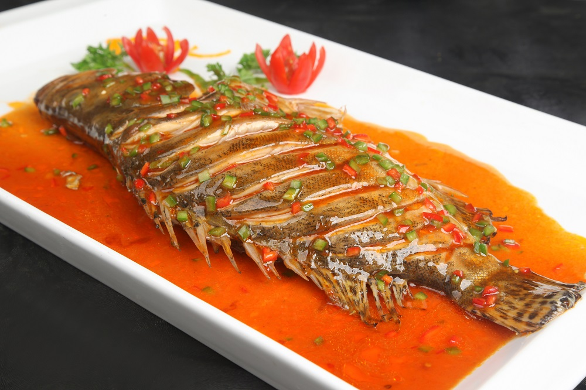

Hey there! I’m from China, where food is such an important part of our culture. From spicy hotpots to
savory dumplings, there’s a dish for every taste and occasion. Being someone who loves exploring
different flavors, I wanted to share some of my favorite Chinese cuisines with you. Whether it’s the
mouth-watering braised Mandarin fish from Anhui or the delicate White Cut Chicken from Cantonese
cuisine, each one tells a story of rich traditions and unique tastes. Check out my favorites below!
The Mandarin Fish is marinated and braised. It is one of the most famous Anhui
cuisine
dishes. It may smell stinky, but it tastes great with tender fish meat separated from fish
bones.The White Cut Chicken is boiled in water over low heat without seasonings. It is
eaten
with dipping sauce made of salt, sugar, ginger, sesame oil, and cooking wine. The chicken
tastes
tender, smooth and slightly sweet.Buddha Jumps Over the Wall is stewed for over 10 hours with 28 main ingredients,
like
abalone, sea cucumber, shark's fin, fish belly, fish lip, tendon, ham, scallops, mushroom,
etc.
Sweet and sour carp is bright red and tastes sweet, sour and crispy outside. It
seems
that the carp is splashing higher, which is an auspicious sign in China.It is a traditional dish in Jinan City, Shandong Province, where the government in
2020
designated it a "classic" dish of Lu cuisine and "one of the most famous dishes in Shandong"
Kung Pao Chicken, also Gong Bao Ji Ding or Gung Po Chicken, is a traditional dish of
Sichuan Cuisine famous both at home and abroad. The mixture of the seasonings makes the dish
taste special, and its flavor can be either spicy or mild, which is decided by the amount of
chili peppers.